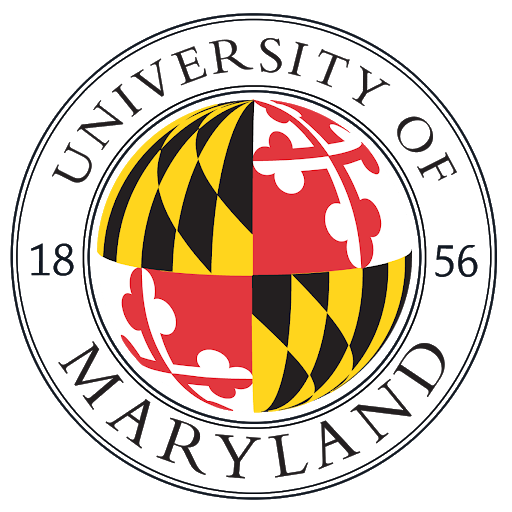

B.S./Information Science
January 2018 - December 2019
University of Maryland - College Park
College Park, MD
Related Coursework
- Object Oriented Programming for Information Science - Python
- Database Design & Modeling
- Dynamic Web Applications
- User-Centered Design
- Data Sources & Manipulation
- Information User Needs & Assessment
Award: OMSE Academic Excellence Award